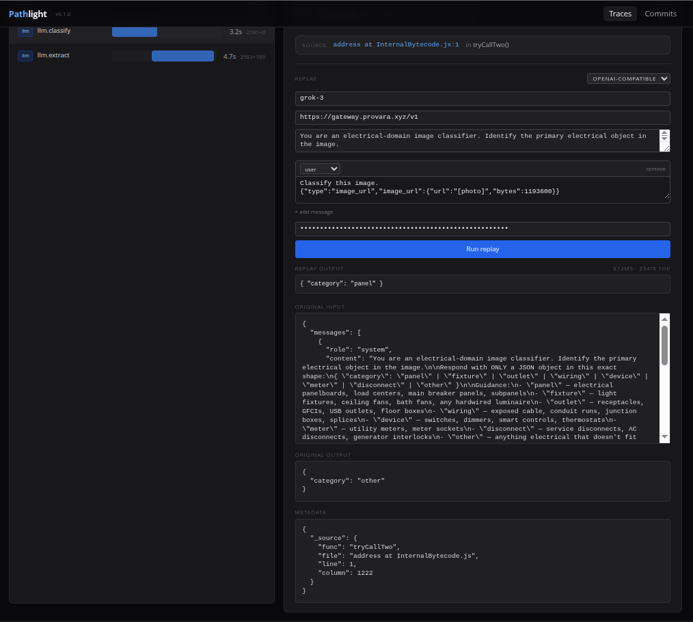
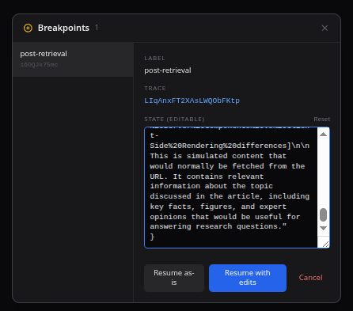
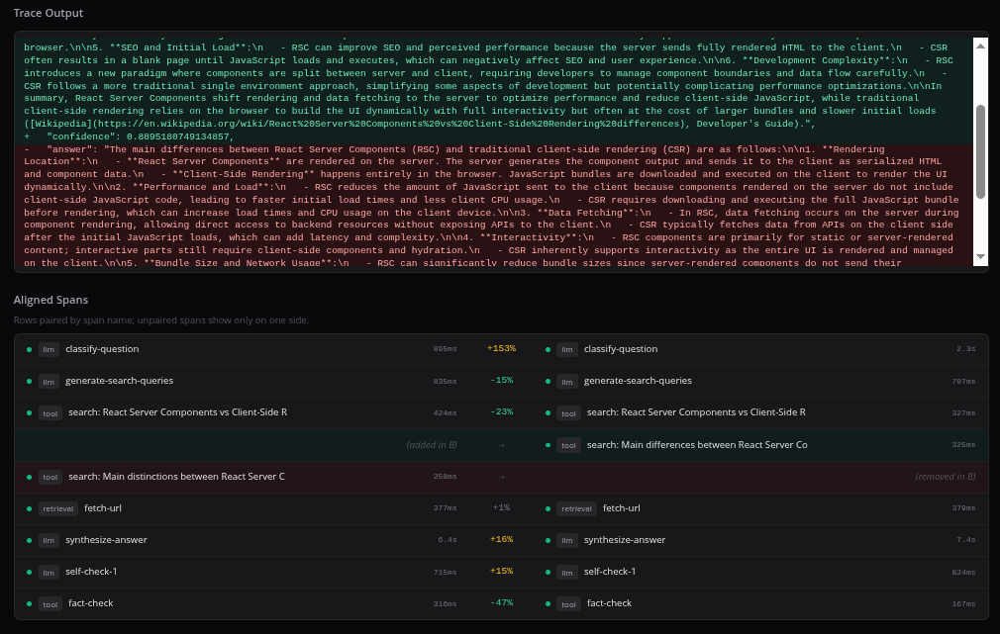

Open source · self-hosted · live
A debugger for AI agents.
Visual traces, live breakpoints, prompt replay, one-click fixes. Drop the SDK in, get every LLM call and tool invocation as an editable, diffable trace — then fix failing runs without leaving the dashboard.
docker compose up -d
Prompt replay
Change the prompt. Re-run it against the real model. Without leaving the dashboard.
Click any LLM span, edit system prompt or any message, paste your provider key
once. Run replay hits OpenAI or Anthropic directly and renders the
new output inline. No more copy-pasting into a separate playground tab.

Live breakpoints
Pause an agent mid-run. Edit its state. Resume.
await tl.breakpoint({ label, state }) anywhere in your
agent. The floating badge on the dashboard lights up, you inspect and edit
the state as JSON, hit Resume with edits — the agent continues with
whatever you changed. It's pdb for agents.

Trace diff
Did my prompt change regress anything?
Select two traces, click Compare. Every span aligned by name with per-pair duration deltas. Input and output diffs rendered line-by-line. Obvious-at-a-glance when a prompt tweak tanks latency, cost, or quality.

Fix this
Fix a failing trace without leaving the dashboard.
Every failed span gets a Fix this button. Pick your provider,
stream the fix over SSE, preview the unified diff, then
Apply to working tree — or run with --bisect to
binary-search a commit range for the regression in O(log N) probes.
BYOK: your Anthropic or OpenAI key, never a Pathlight proxy.

BYOK encrypted keys
Your provider keys, sealed at rest.
Store Anthropic, OpenAI, and git tokens per project. libsodium
crypto_secretbox_easy with a fresh nonce per value;
plaintext is never logged, never returned, never echoed in errors.
The dashboard drives fix runs with stored key IDs so secrets never
touch the browser.

OpenClaw plugin
OpenClaw agents, auto-instrumented.
openclaw plugins install @pathlight/openclaw and every
agent run, LLM call, tool invocation, and sub-agent delegation shows up
in your dashboard — with git_commit /
git_branch / git_dirty attached automatically.
Graceful degradation if the collector is unreachable; one warning, no
crash.

ComfyUI tracing
Turn ComfyUI workflows into inspectable traces.
Drop the Pathlight plugin into custom_nodes and completed
ComfyUI runs auto-export to the collector. Workflow nodes become
timeline spans with prompts, model settings, outputs, titles, and
execution errors attached. The optional Pathlight Status
node is just a visible marker; tracing runs from the backend plugin.
Git-linked
Every trace carries the commit SHA that produced it. The /commits dashboard flags cost and latency regressions above 25% in red.
CI-ready
@pathlight/eval gives you pytest-style assertions over recent traces. npx pathlight-eval specs.mjs exits nonzero on any violation.
OpenTelemetry
Point any OTel-instrumented app at /v1/otlp/traces — gen_ai.* attributes map straight into Pathlight's span model.
TypeScript + Python
npm install @pathlight/sdk or pip install pathlight. Same dashboard, same features, same data model.
Self-hosted
Your traces stay on your machine. Single SQLite file. Docker Compose or one turbo dev.
Share without signup
pathlight share <trace-id> emits a single self-contained HTML file. Zero dependencies to open.
Fix engine
Every failed span gets a Fix this button. Stream a BYOK-powered unified diff, apply to your working tree, or --bisect a commit range to find the regression SHA.
BYOK by default
Pathlight never proxies your inference. Anthropic, OpenAI, and git tokens stored per project with libsodium-sealed encryption; plaintext never leaves the server.
OpenClaw native
openclaw plugins install @pathlight/openclaw — agent runs, LLM calls, tool invocations, and sub-agent delegation as Pathlight traces with full git provenance.
ComfyUI workflows
Auto-export local ComfyUI workflow runs as Pathlight traces. See node inputs, prompt text, outputs, failures, and graph structure in the timeline.
Start in 30 seconds
Self-host
git clone https://github.com/syndicalt/pathlight.git
cd pathlight
docker compose up -dDashboard at localhost:3100, collector at localhost:4100.
Instrument — TypeScript
npm install @pathlight/sdkimport { Pathlight } from "@pathlight/sdk";
const tl = new Pathlight({ baseUrl: "http://localhost:4100" });
const trace = tl.trace("my-agent", { query });
const span = trace.span("llm.chat", "llm", { model: "gpt-4o" });
await span.end({ output, inputTokens, outputTokens });
await trace.end({ output: final });Instrument — Python
pip install pathlightfrom pathlight import Pathlight
pl = Pathlight(base_url="http://localhost:4100")
with pl.trace("my-agent", input={"query": q}) as trace:
with trace.span("llm.chat", type="llm", model="gpt-4o") as s:
s.end(output=result, input_tokens=50, output_tokens=10)
trace.end(output=final)